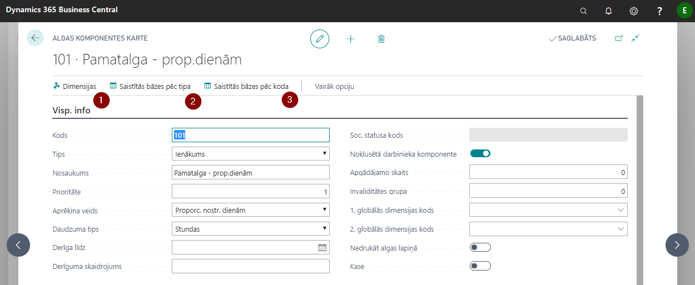
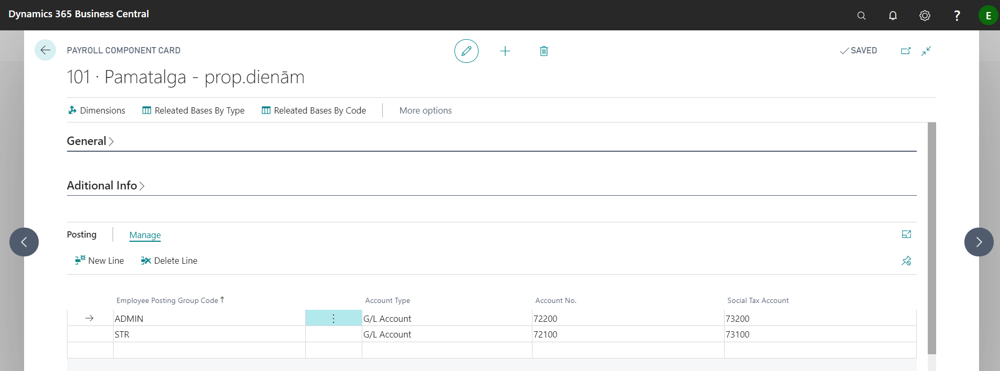
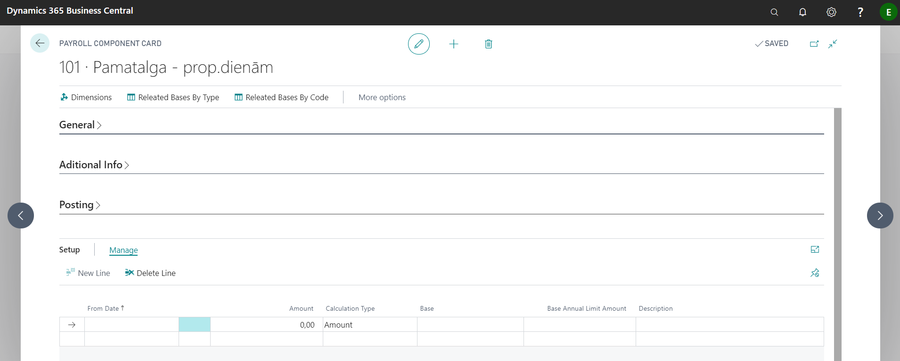

Payroll components
Salary calculation is made from different salary components – incomes, deductions, reliefs, taxes, etc.. All components are listed in Payroll components.
Tip
Generally, most of these components are common to all companies and are prepared in advance - while creating a new customer base. Therefore, it is not recommended to delete and modify these values without consulting ELVA consultants.
Each component has a separate card where settings are made and it is possible to assign dimensions  and view calculation bases, in which the specific component is used, by clicking on
and view calculation bases, in which the specific component is used, by clicking on  and
and 
Tab: General

| Field name | Description |
|---|---|
| Code | Freely defined code. |
| Type | Select the appropriate type from the list. |
| Description | Freely defined component name. |
| Priority | Specifies the priority of the component in the payroll calculation process – the smaller the number, the higher the priority. Thus, this component will be included in the salary calculation sooner. Priority falls automatically when you create a new payroll component, it is not advised to change on your own. |
| Calculation Method | Choose from the list how the component will be calculated |
| Quantity Type | It is necessary to specify which units of measure to be used when calculating overtime in the timesheet. |
| Valid Until | Until what date the component is in effect. |
| Validity Explanation | Freely definable text that will be reflected in the calculation of salaries in the error message in case the component is not already in force. |
| Social Status Code | Provide a social status code for the social tax component. |
| Default Component | Enable if this component fills in automatically when you create payroll components on the employee card. |
| Dependant Count | Is filled in case it is a relief component regarding dependants – inserts the appropriate number of dependants. |
| Disability Group | Is filled in case it is a relief component regarding disability – fills in the appropriate disability group. |
| Global Dimension 1 Code | If necessary, indicate the 1st global dimension for the salary component. |
| Global Dimension 2 Code | If necessary, indicate the 2nd global dimension for the salary component. |
| Hide in Pay Slip | Enable if the information about this payroll component will not be printed in the pay slip. |
Tab: Additional Info

| Field name | Description |
|---|---|
| Net Amount | Enable if the net amount is used in the calculation. If the net component has an amount with a negative sign, this amount will be considered as a gross amount. |
| Overtime Component Code | Specifies the attached Overtime payroll component. |
| Bank Holiday Component Code | Specifies the attached Bank Holiday Hour payroll component. |
| Night Pay Component Code | Specifies the associated Night Hour Payroll components. |
| Compensated Hour Comp. Code | Specifies the payroll component that is used in the payroll calculation to compensate the bank holiday hours that fall during normal working hours and the employee did not work on that day. |
| Over Annual Limit Comp. Code | Specifies the payroll component code that will be used in the payroll calculation if the limit for this component is exceeded. |
| Relief Available Amount Base | Base that defines the amount of relief for a given component. |
| Uncalc. Relief Comp. Code | Specifies the payroll component code that will be applied to transfer uncalculated reliefs to salary calculations for the next months. |
| Income Tax Lvl2 Component Code | Income Tax level 2 Base Code |
| Income Tax Lvl3 Component Code | Income Tax level 3 Base Code. |
| Always Use Calculation Period | Enable if it is necessary to use the current calculation period for income tax calculation. |
| Split To Related Components | Enable if components are formed from setup (base amounts) and are divided according to the components that are in the base amounts. |
| Base Salary | Enable if this component is recognized as a base salary component. |
| Bank Holiday Pay in Vacation | Enable at the basic salary component cards if you want that payment for bank holidays (which falls on an employee's work day) to be calculated during vacation. If a bank holiday falls during vacation, the system reduces the number of days taken by the holiday by these days. |
| Nonworking Bank Holiday by Average | Enable at the basic salary component cards if you wan to pay average salary, for a worker's holiday falls on a bank holiday that falls on a working day according to the national calendar.To calculate average earnings per day, the check mark must be at Allow Bank Holiday Hours what is located at employee card's section Employee Payroll components. |
| No G/L Posting | Indicates that the corresponding component data will not be posted to the general ledger. |
| Salary Account No. | Indicates the corresponding general ledger account in which Payroll Payments will be posted. |
| Posting Group Account Sign | Indicates the side of the posting group: debit or credit. |
| Include Zero Amount | Enable if you want to create a payroll line with 0 amount (there is no possibility to deduct the amount, but there is a possibility that the user can adjust the amount of the deduction). It is necessary to generate a queue to be able to transfer money to third parties. |
Tab: Posting

| Field name | Description |
|---|---|
| Employee Posting Group Code | Selects from the list to which group this component applies. |
| Account Type | Selects from the list. |
| Account No. | Payroll account number is selected from the chart of accounts (or vendor/customer if the type is vendor/customer). |
| Social Tax Account | Specifies the Account Number of the Employer's Social Tax (DDSN) Cost. DDSN can be posted to different cost accounts specified for each employee posting group. |
Tab: Setup

| Field name | Description |
|---|---|
| From Date | Indicates the date from which this value is valid. |
| Amount | Indicates a value if it is constant. |
| Calculation Type | Indicates whether the value entered will be an amount or a percentage |
| Base | If percentage is selected, indicate the base from which amount the percentage will be calculated. |
| Base Annual Limit Amount | The limit is indicated, after which no calculations are made. |
| Description | Free field to fill. |